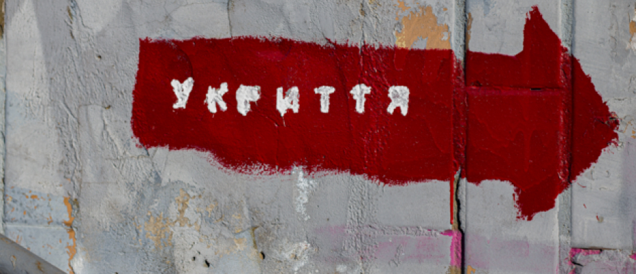

Правоохоронці пояснили, що треба робити при повітряній тривозі.
Через повномасштабне військове вторгнення РФ в Україні тривають бойові дії, обстріли та лунають сирени повітряної тривоги. Є чіткі правила та алгоритми поводження при повітряній тривозі. У Національній поліції пояснили, що треба робити українцям, якщо лунає сирена повітряної тривоги.
Як пояснити дитині правила поведінки при повітряній тривозі
У Нацполіції зазначили, що дорослі мають роз'яснити дітям порядок дій, коли лунають сирени. За певних обставин алгоритм може бути дещо різним, але найголовніше правило звучить так: почув сирену — одразу прямуй до укриття
Залежно від того, де знаходиться дитина — в школі чи вдома — вона має знати, як діяти швидко та без паніки.
Якщо сирена повітряної тривоги застала на вулиці, необхідно:
- Одразу прямувати до найближчого укриття (підземні переходи, метро тощо).
- Якщо дитина не знає, куди йти – нехай спитає у дорослих.
- Якщо поряд немає укриття, але видно лісосмугу, варто прямувати туди і сховатися (дерева забирають на себе розліт осколків).
Вдома при повітряній тривозі потрібно:
- Закрити вікна, вимкнути всі прилади та світло.
- Швидко одягнутися, взяти з собою тривожну валізу з необхідними речами.
- Разом з дорослими прямувати до укриття та уважно стежити за повідомленням місцевої влади, правоохоронців.
- Якщо поруч немає укриття, дотримуватися правила "двох стін".
Що робити під час повітряної тривоги у школі
- Чітко виконувати вказівки вчителів, швидко та без паніки пройти в укриття.
- Після команди "Відбій повітряної тривоги" разом зі вчителем вийти з укриття та повернутися до класу.
Що треба робити під час повітряної тривоги у громадському місці
- Уважно слухати повідомлення адміністрації закладу, де перебуваєте дитина (або ви), і дотримуватись озвученої інструкції.
- Під час евакуації не користуватися ліфтом, а спускатись тільки сходами.
- Прямувати до укриття чітко визначеним маршрутом.